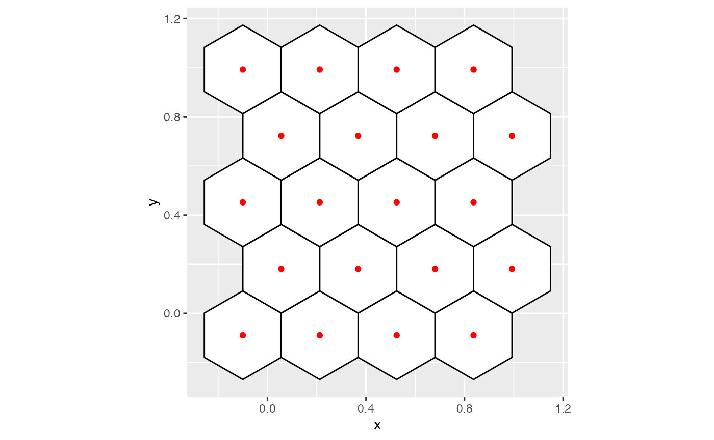
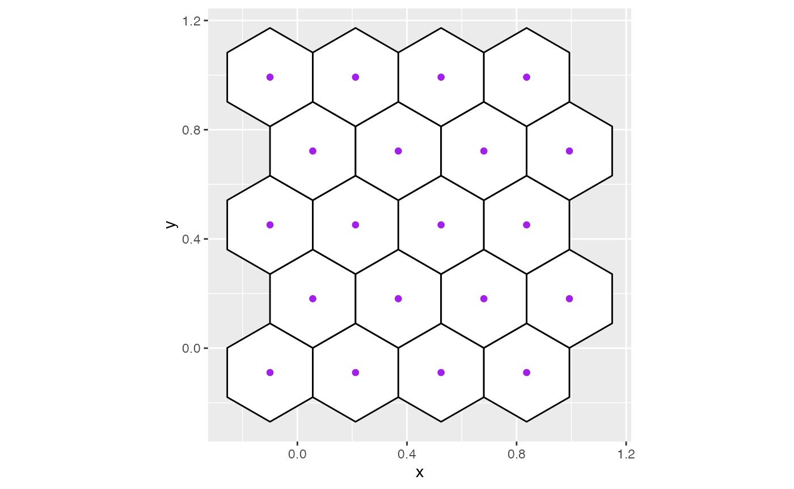
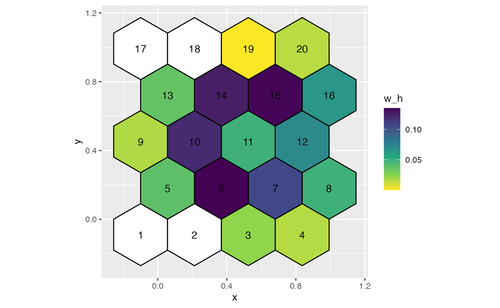
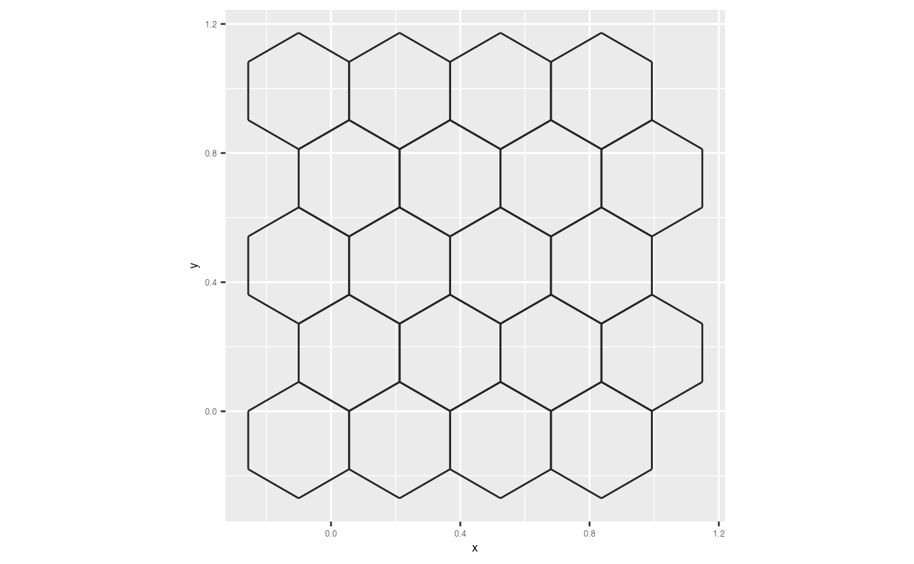

Here, we’ll discuss the algorithm for binning data.
By passing the preprocessed 2D embedding data and hexagonal grid configurations, you can obtain the hexagonal binning information like centroid coordinates, hexagonal polygon coordinates, the standardise counts within each hexagon etc.
lim1 <- s_curve_obj$s_curve_umap_scaled_obj$lim1
lim2 <- s_curve_obj$s_curve_umap_scaled_obj$lim2
r2 <- diff(lim2)/diff(lim1)
umap_scaled <- s_curve_obj$s_curve_umap_scaled_obj$scaled_nldr
hb_obj <- hex_binning(data = umap_scaled, bin1 = 15, q = 0.1, r2 = r2)
## Data set with all possible centroids in the hexagonal grid
all_centroids_df <- s_curve_obj$s_curve_umap_hb_obj$centroids
glimpse(all_centroids_df)
#> Rows: 240
#> Columns: 3
#> $ hexID <int> 1, 2, 3, 4, 5, 6, 7, 8, 9, 10, 11, 12, 13, 14, 15, 16, 17, 18, 1…
#> $ c_x <dbl> -0.10000000, -0.01736457, 0.06527086, 0.14790629, 0.23054172, 0.…
#> $ c_y <dbl> -0.08849688, -0.08849688, -0.08849688, -0.08849688, -0.08849688,…
## Generate all coordinates of hexagons
hex_grid <- s_curve_obj$s_curve_umap_hb_obj$hex_poly
glimpse(hex_grid)
#> Rows: 1,440
#> Columns: 3
#> $ hex_poly_id <int> 1, 1, 1, 1, 1, 1, 2, 2, 2, 2, 2, 2, 3, 3, 3, 3, 3, 3, 4, 4…
#> $ x <dbl> -0.10000000, -0.14131771, -0.14131771, -0.10000000, -0.058…
#> $ y <dbl> -0.04078730, -0.06464209, -0.11235168, -0.13620647, -0.112…
## To obtain the standardise counts within hexbins
counts_df <- s_curve_obj$s_curve_umap_hb_obj$std_cts
df_bin_centroids <- extract_hexbin_centroids(centroids_df = all_centroids_df,
counts_df = counts_df) |>
filter(drop_empty == FALSE)
ggplot(data = hex_grid, aes(x = x, y = y)) +
geom_polygon(fill = "white", color = "black", aes(group = hex_poly_id)) +
geom_point(data = all_centroids_df, aes(x = c_x, y = c_y), color = "red") +
coord_fixed()
ggplot(data = hex_grid, aes(x = x, y = y)) +
geom_polygon(fill = "white", color = "black", aes(group = hex_poly_id)) +
geom_point(data = all_centroids_df, aes(x = c_x, y = c_y), color = "red") +
geom_point(data = df_bin_centroids, aes(x = c_x, y = c_y), color = "purple") +
coord_fixed()
ggplot(data = hex_grid, aes(x = x, y = y)) +
geom_polygon(fill = "white", color = "black", aes(group = hex_poly_id)) +
geom_point(data = umap_scaled, aes(x = emb1, y = emb2), color = "blue") +
coord_fixed()
hex_grid_with_counts <- left_join(hex_grid, counts_df, by = c("hex_poly_id" = "hb_id"))
ggplot(data = hex_grid_with_counts, aes(x = x, y = y)) +
geom_polygon(color = "black", aes(group = hex_poly_id, fill = std_counts)) +
geom_text(data = all_centroids_df, aes(x = c_x, y = c_y, label = hexID)) +
scale_fill_viridis_c(direction = -1, na.value = "#ffffff") +
coord_fixed()
You can also use geom_hexgrid to visualise the hexagonal
grid rather than geom_polygon.
ggplot(data = all_centroids_df, aes(x = c_x, y = c_y)) +
geom_hexgrid() +
coord_equal() +
xlab("x") + ylab("y") +
theme(axis.text = element_text(size = 5),
axis.title = element_text(size = 7))